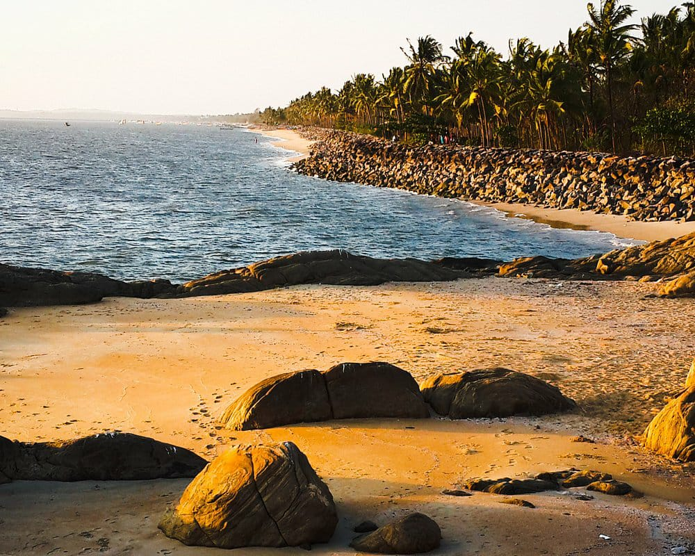

1 / 3

Kozhikkode
2 / 3
3 / 3

Year of formation : 1957, January 1 Main River : Chaliyar Kozhikode was the seat of the Zamorins of Calicut (Nediyiruppu Swaroopam). Kozhikode leads in the production of coconut. Vaikom Muhammad Basheer is known as Beypore Sultan. Kappad where Vasco da gama landed in 1498, Kallai, the centre of wood industry, Mavoor Rayons, hydro-electric projects like Kuttiyadi and Kakkayam are in Kozhikode district. The oldest city in Kerala is Kozhikkode. The northern most corporation in Kerala Kozhikode. Farok is famous for tile industries. Thusharagiri water falls and Wayanad pass are in Kozhikode Kozhikode is the first cola free district in Kerala. The first Khadi village in Kerala is Balussery. The first ISO certified police station in Kerala - Kozhikode Town Police Station. The first women police station in India - Kozhikode The first WiFi University is Calicut University. The first water museum in Kerala is set up in Kozhikode First plastic waste free district in India Kozhikode. The first sports Medicine Institute in Kerala - Kozhikode Kuttyadi is the first Hydro Electric Project in Malabar region. Famous annual assembly of scholars named "Ravathi Pattathanam" was held in Tali Mahadeva Temple. India's - warship Building Research Centre - NIRDESH is in Chaliyam. Kozhikode is the first tobacco free city in Kerala The Malabar wild life sanctuary is in Kozhikode. Wayanad Churam is situated in Kozhikode Bepur is known as Sultan city Wayanad churam is completely in Kozhikode district. Nallalam diesel power project is in Kozhikode district. Marad, Kappad and Beypore are the beaches in Kozhikode district. Pazhassi Raja museum is at East hill in Kozhikode. Birth place of Thacholi Othenan, Thacholi Manikothu Tharavadu is in Vadakara.